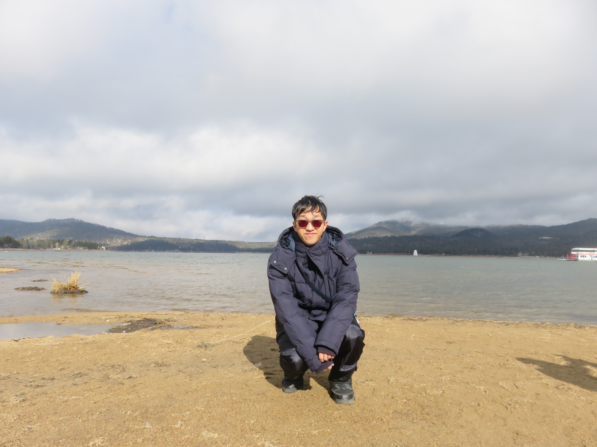

私はエリックチェンと申します。アメリカに生まれたけれど台湾の台北に育ちました。こうした国際的な育ちと経験を活かしたい私は将来、教師になりたい夢があります。
一年間東京の上智大学に留学した経験もあり、上智大学で大学生に英会話を教えた経験もあります。八人の学生さんに英語のドラマを見ったり、人狼ゲームを遊んだり、好きなものについてプレゼンテーションするなどの楽しい方法を通じて、学生の英語に関する関心と自信を上げたという自責があります.
アメリカの南カリフォルニア大学での専攻が東アジア研究で副専攻がデジタルスタディーズと英語教育です。教育、デザインと東亜の文化への関心を将来に生かしたいです。